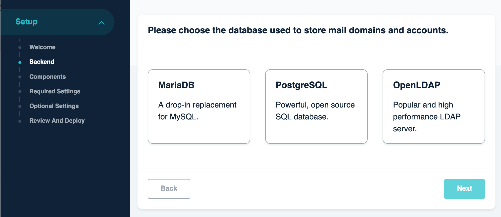
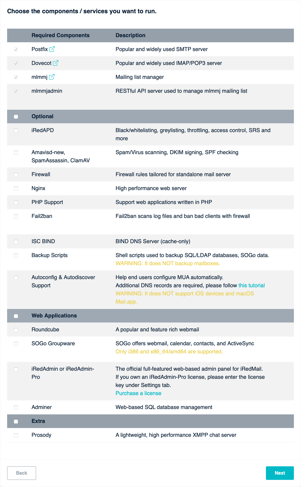
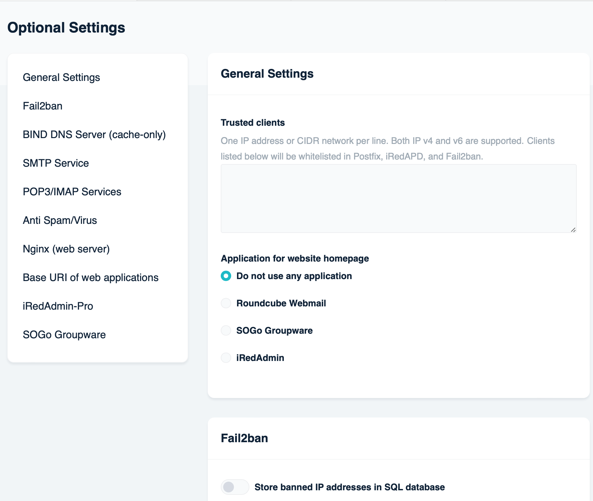

Attention
Check out the lightweight on-premises email archiving software developed by iRedMail team: Spider Email Archiver.
Attention
/root/.iredmail/kv/ on your server, also organized in file
/root/iRedMail/iRedMail.tips.iRedMail Pro is a web-based, on-premises iRedMail server installer and management admin panel.
With iRedMail Pro, it's easy to deploy (or re-deploy) and keep the iRedMail server up to date.
We encourage all users to deploy new iRedMail servers with this platform and keep the servers up to date.
If you prefer classic downloadable iRedMail installer, you can find the installation guides here: Install iRedMail.
Warning
Many ISPs block port 25 by default, it's used for communication between mail servers, it must be open, otherwise your server may be not able to receive or / and send emails. Please contact your ISP to make sure it's not blocked, or ask them to unblock.
Linux/BSD distribution releases supported by iRedMail Pro:
| Distribution | Release Versions |
|---|---|
| CentOS Stream | 8, 9 |
| Rocky Linux | 8, 9 |
| AlmaLinux | 8, 9 |
| Debian | 11 |
| Ubuntu | 20.04, 22.07 |
| OpenBSD | 7.2 |
If you need to install iRedMail on FreeBSD, please use the downloadable installer instead.
4 GB memory for a low traffic production server.Run commands below on the server to download iRedMail Pro for Linux (x86_64):
wget -O /usr/local/bin/iredmail https://dl.iredmail.org/iredmail-2.0-beta1-linux-x86_64
chmod +x /usr/local/bin/iredmail
Launch the installer:
/usr/local/bin/iredmail
It runs a web server on port 8080, please visit it with a web browser and go
through the wizard to finish the installation.
After installation, it runs on port 7793.
Below are screenshots of the installation wizard.
A backend is a SQL or LDAP database used to store mail domains and accounts. We suggest you choose the one you're familiar with for easier maintenance.

A component is a software (or software group, service) which implements some network service(s). On this page you can choose the components you want to deploy on your mail server.

Few settings are required to deploy a mail server.

Depends on the components you chose to install, the settings on this page may be different.

Attention
All account passwords are generated randomly during deployment, stored in
files under /root/.iredmail/kv/ on your server, also organized in file
/root/iRedMail/iRedMail.tips.
Review the settings:

And click Confirm and Deploy button to deploy immediately: